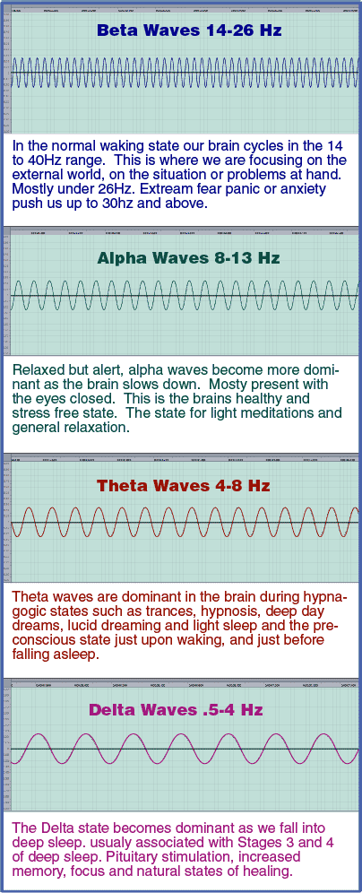
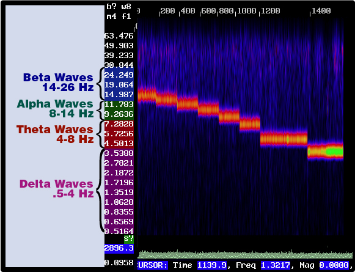
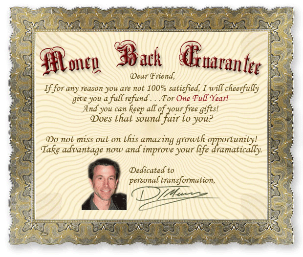

Tire of Getting NOWHERE with meditating? Use my Secret Weapon and
you'll be Amazed at the results
And save yourself hundreds of dollars!
Yes other companies are charging HUNDREDS of dollars
for this
exact technology . . .
Let me get right to the point. I just could not stand those guys charging ten times what it's worth! I was doing this stuff when I was 14 with only a kit from our local electronics store, and a book on rhythms of the brain. So . . . Here it is! Fast forward 20 years or so, and I find people selling this stuff for WAY TOO MUCH!
Would you like to know what it is, and get it
for pennies on the
dollar?
Its not complicated (as I will explain in a moment), and for a
limited time (see below),
it won't cost the fortune the other guys are charging
either
stay with me while I make this perfectly clear for you
. . .
"There are two mistakes one can make along the road to
truth...
not going all the way, and not starting."
~Buddha
Its been around for decades because . . .
IT WORKS! Just ask any of your friends who spend hundreds of dollars on the other guys programs . . . If they have used it, they will swear by it. Just don't tell them you got yours for so cheap! Evidence continues to pile up on the benefits of utilizing the natural frequencies of your brain. Just google and you will be overwhelmed at the volumes of data (and overpriced products) out there. Be glad you found this one before spending too much! Besides, this is the easy way because . . .
Talk about 'zoned out'. I love it! Thanks for the 20 minute session – It's my favorite!
Donna D. New Jersey
Who needs Calgone? 30 minutes with my headphones on and its like a 3 day vacation from my kids! And yes, Justin (6) likes to listen until he falls asleep.
Michael J. Las Vegas, Nevada
You have already done this . . .
On the Train, in the car, on the subway or light-rail. . . even in the office doing nothing! Your brain Entrains itself to the rhythms around it visually and auditoraly.
That 'click-click' . . . 'click-click' . . .
'click-click' . . . of the tracks as you ride the train or
subway . . . The flapping thud when the tires cross over the joints in
the concrete every second or so when your cruising down the highway . .
. How about listening to tribal drums?
Our ancestors even knew about brain
frequencies -
and used it
to their advantage.
Your brain and your body are picking up on that rhythm and entraining to it.

I can put this [Meditation Secret Session] on no matter what my mood is and still come away relaxed and centered. Thank you very much.
Joanne C. Monterey, CA
Ever wondered why fluorescent lights put most people in a funk?
You guessed it. Because they 'flicker' at 60 cycles per second. Way out of the "productive" range of the human brain - and your entraining to it all day! (do yourself a favor and use the 5 Minute Meditation Secret on breaks at work – be in control of your brain power!) You will be amazed at the difference just one 5 Minute Meditation Secret session can make! Can you imagine what your coworkers will think when you seem to be the only one who can focus and be productive?
"There is only one success -to be able to spend your life in your own way."
~Christopher Morley
The reason this is so effective . . .
Is because your brain operates at known frequencies. Beta, Alpha, Theta, and Delta. Look at the image below and you can see the advantage of being able to purposefully put your brain into the right state for the right job! Imagine trying to get productive work done in the middle of the day and your in Theta state . . . OR imagine trying to meditate and find your own inner peace and being Beta state?!?!? It just doesn't work. By purposefully putting your self in the Alpha and or Theta state (by listening to the Meditation Secret Sessions) your brain can't help but relax and let go . . . .

It is so refreshing to see someone take an honest approach to meditation tools. Thanks for the 20 minute session – It's my favorite!
Dianna B. St. Louis, MO
OK, so to be perfectly honest . . .
I used to use meditation as an easy excuse to take a quick nap! You know you've done it, haven't you? "Gee, I'm feeling kind of tired, uh . . . everyone leave me alone for a while, I am going to 'meditate'" yeah, right! Well, now I look forward to my meditation sessions because I get so much more out of them thanks to this! Wouldn't you like to think more clearly? Have a sense of calm? Feel more centered?
You don't need this product if . . .
- You already reach deep states of productive rejuvenating meditation
quickly and easily - You would rather keep trying to use willpower to control your focus
(the frequency of your brain)
{after all, most masters say it only takes a few years} - You would rather spend ten times as much (or more) on a similar product.
- Your just going to give up anyway . . .
but . . .
If you're Serious about reaching deeper states of relaxation and creativity . . .
Then act now before they are gone for good. (see below) I am so sure of the amazing benefits of this technology, I am going to take all the risk! Act now and use it seriously and you . . .
Risk Nothing!
How much longer are you going to keep wasting . . .
all of your energy on willpower? Even the Masters know you just can't get there with willpower alone.
Finally, you don't even have to try
Your brain simply has no choice but to synchronize with its surroundings. That's why angry people stay angry and sick people stay sick, and happy people stay happy! Do You want to stay where you are? Or are you ready to make a change and take control! By exposing your brain with the right frequency, it can't help but get into rhythm – just like the clocks! Try it now and see what it feels like to finally reach the deepest levels of meditation with out the decades of dedication and practice the Masters have to put in, and save HUNDREDS of dollars over what the other guys charge for the same technology!
Call me silly, but are you sure there are no subliminals on there[Meditation Secret session]? My brain seems to get the message "shut up and relax". Thanks for the 20 minute session – It's my favorite!
Donna D. New Jersey
And Remember . . .
Each CD comes complete with 7 individual sessions!
That's right. Not some one track CD with just one 60 minute session that forces you to meditate for a whole hour. Even if you can already do it, and enjoy it – wouldn't you like to have a choice of how long? Sometimes you can't spend a whole hour, but 15 or 30 minutes would be perfect for you. If you've spent tons of money on fancy meditation tapes only to be frustrated at being FORCED to meditate for a full hour – you really appreciate this! I don't know about you , but when I first started meditating I could barely hold my focus for 5 minutes. That's why I give you so many choices. Not only can you work your way up to a full hour – at your on speed, you can also use any one of these individual sessions to fit perfectly into the time you have available!
Every CD comes with ALL of these sessions:
- 5 Minute Meditation Secret session -
for the beginner or when you just need an easy way
to re-center yourself in just a few minutes - 10 Minute Meditation Secret session –
you're ready for more. - 15 Minute Meditation Secret session –
Happy with 10 minutes, try 15. - 20 Minute Meditation Secret session –
This one I threw in because I like to take 20 minute power breaks! - 30 Minute Meditation Secret session –
Perfect for starting your day! - 45 Minute Meditation Secret session –
Now your talking about some deep meditation, extend your stay in Theta state. - 60 Minute Meditation Secret session –
For the utmost in deep revitalization and enjoying your true center.
The 15 min session was an awesome way to restore my energy during that late afternoon slump. The effects lasted well into the evening without the crash effect of caffeine and sugar. I have never been so relaxed and productive at the same time.
Jennifer R. St. Louis MO
The Bottom Line: Price . . .
Well, is your state of mind worth $29.95
Limited time Just $19.95 for the full 3 cd set! What are you waiting for?
Under twenty bucks! ARE YOU KIDDING?!?!?!? Get them while you can! I'm going to come to my senses any minute and put it back up to $29. I think I get more orders at $29 but my best friend read some psychology study about prices, so I made him a bet that sales would drop if we lowered the price, so PROVE ME WRONG and order now, or just come back next week and pay the twenty nine bucks! The choice is yours . . . are you ready to take meditation and relaxation to a new level? Improve your concentration and focus?
So, act now and get your copy while they are still available!
• • • Just Added!! • • •
That's right, now you can instantly download ANY INDIVIDUAL SESSION as an MP3!
For only $1.99 each!
That's over $6 in savings off the CD Set.
- if you buy all seven -
Plus - $ave on shipping!
IMPORTANT: Act NOW before . . .
Well I just might get lazy and decide to shut this down. I do like my free time, you know? I am very excited to be able to provide such an easy, affordable solution to the frustration of trying so hard to relax your head hurts . . . But I'm just not into work . . . So when the hardcopies I have are gone – THAT'S IT!I will take this site down and let those other guys make their billions by charging ten times as much as I am.
So, act now and get your copy while they are still available!
Get Serious: Stop wasting your time floating along and take control! You can put years into this, or minutes. Act now and get your Meditation Secret Sessions as Instant m4a Downloads for your computer or mp3 player. Take charge and make meditation work for you!
Sincerely,
Darin Murray
P.S. Congratulations on stepping out of the ordinary and taking control of your life! Only those who try new things change their life for good.
P.P.S If you always do what you've always done, you'll always get what you've always got! Act now and make that change you've been waiting for . . . aren't you worth it?
If your not ready to take yourself to the next level because you have a question. . . Just Ask! I still answer all of my own email for now . . .
This Meditation Secret Multi-Session CD has been produced and approved by Darin Murray, certified Hypnotherapist, NLP and Time Line Therapy Practitioner. Darin Murray is certified through the American Board of Hypnosis, The Society of NLP, and the American Board of NLP.
This CD is protected under international copyright laws, no part of this CD may be reproduced without expressed written permission.
Do not listen to this CD while driving or operating machinery. Only to be used in a safe, relaxing environment, preferably uninterrupted.
" Change your thinking and change your world" – Bob Proctor